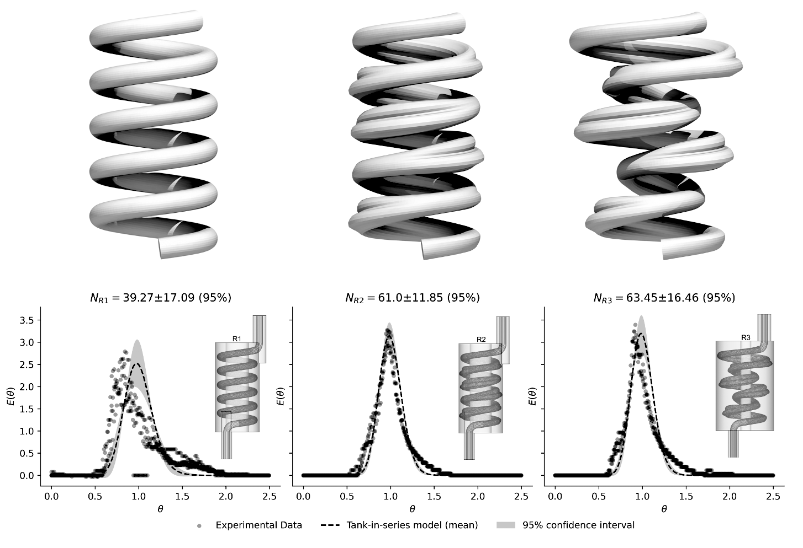
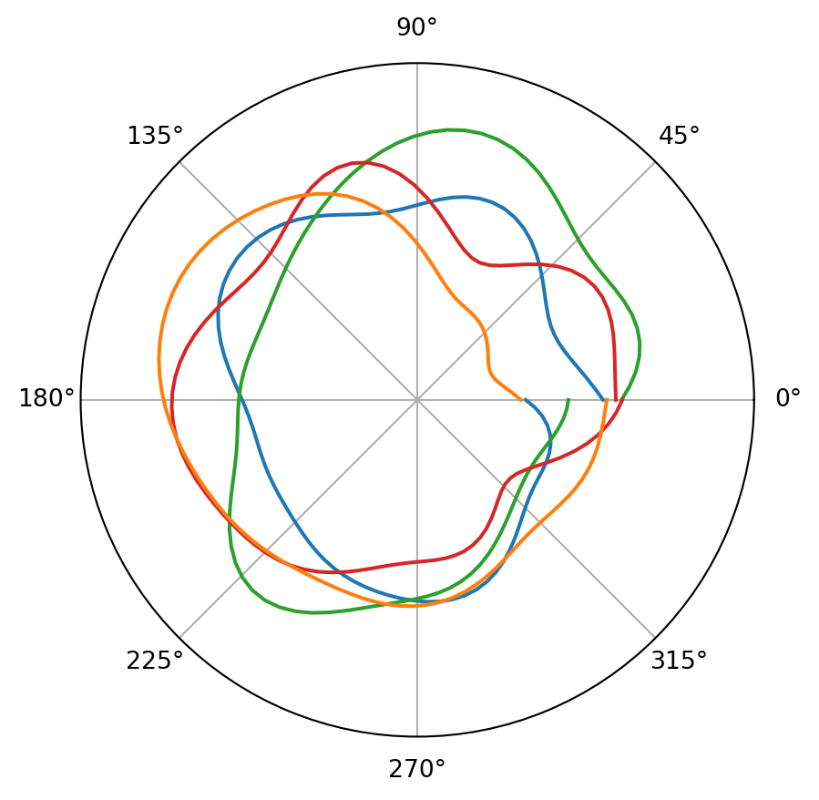
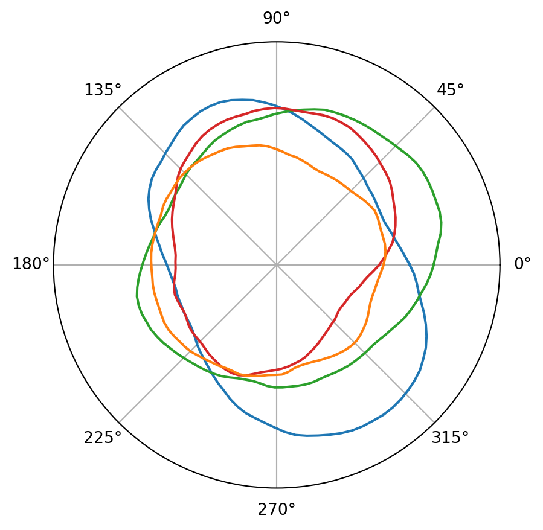
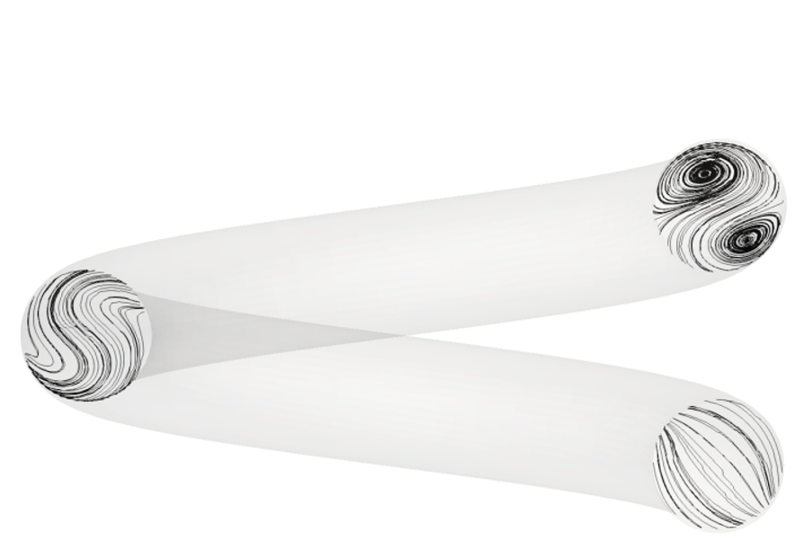
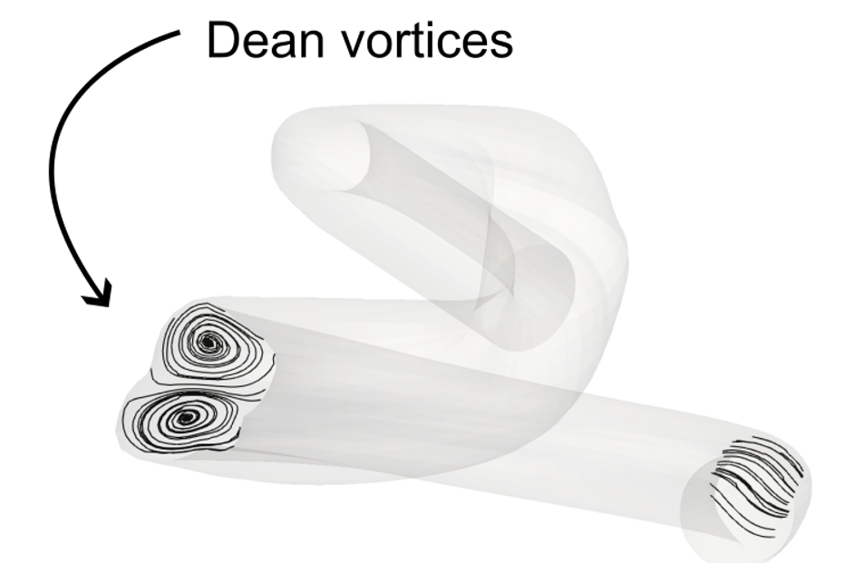
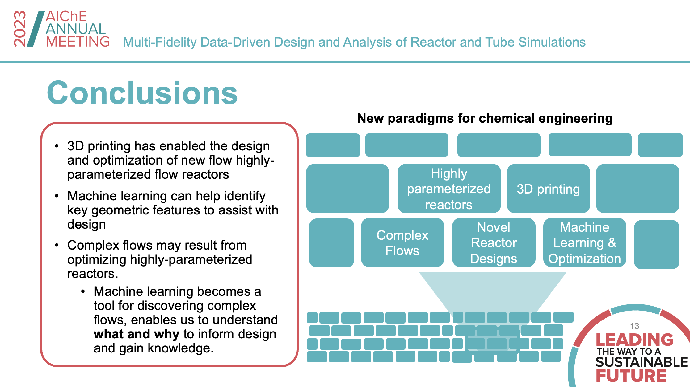

This AIChE was in Orlando. However, due to a delay at US customs during a layover at Chicago O’Hare I was prescribed the unfortunate detour of an evening in downtown Chicago.
I begrudgingly recreated the cover of one of my favourite albums as well as ate deep dish pizza and the like… However after arriving in Orlando I presented three talks:
A Data-Driven Framework for the Design of Reactor Simulations: Exploiting Multiple Continuous Fidelities: Data Driven Optimisation
In this talk I outlined the problem formulation and methodology for the optimisation of coiled-tube reactor geometry.
Additive manufacturing has enabled the creation of reactors with non-traditional geometries, so to take advantage of this we parameterise the wall and path of a coiled tube reactor and formulate a large, expensive derivative free/black box optimisation problem.
Because the closed loop procedure of meshing and simulating a given geometry is so expensive we formulate it as a multi-fidelity Bayesian optimisation problem with two independent continuous fidelities.
 TL;DR we use the insights generated via optimisation to design two new flow reactors. We experimentally validate these and demonstrate improved plug-flow behaviour at low Reynolds numbers under steady-flow conditions.
Me presenting the talk. Spot the 3D printed reactor on the table.
Extra polar Gaussian process content and shoutout to GPJax
As part of this work I parameterised the walls of a coiled tube reactor using a series of polar Gaussian Processes, allowing me to shift and warp the wall whilst ensuring it remains closed and continuous (AKA no leaks!). As part of this I ended up contributing to the open-source GPJax library which has been my library of choice for Gaussian processes for the last year.
Polar Gaussian processes work by applying a kernel function that operates using modulo-arithmatic. This ensures that as opposed to a data point at \(\theta=0\) and \(\theta=2\pi\) having zero correlation, they infact have perfect correlation. In short, the correlation between data ‘wraps around’ to the beginning.
If we define a standard covariance function such as the Matern function, and simply plot samples from a respective Gaussian process on a polar axis, the results are clearly not continuous in the polar domain.
import matplotlib.pyplot as pltimport numpy as np def matern(t1,t2): d =2*(t1-t2)**2; p =2return (1+(np.sqrt(3)*d)/p) * np.exp(-(np.sqrt(3)*d)/p)def plot_samples(k): n =100 theta = np.linspace(0,2*np.pi,n) covariance_matrix = np.array([[k(theta[i],theta[j]) for i inrange(n)] for j inrange(n)]) mean_function = np.array([1for i inrange(n)]) fig,ax = plt.subplots(1,1,subplot_kw={'projection': 'polar'}) ax.set_rticks([]); ax.set_rlim(-4,4) cols = ['tab:blue','tab:green','tab:red','tab:orange']for i inrange(4): prior_sample = np.random.multivariate_normal(mean_function,covariance_matrix) ax.plot(theta,prior_sample,c=cols[i])plot_samples(matern)

Samples from a non-polar Gaussian Process
The samples are not closed because our kernel function believes that \(2\pi\) and \(0\) are very ‘far away’, when in fact they are perfectly correlated. A polar kernel function should reflect this fact:
def polar(t1,t2): tau = np.pi# angular distance d =abs(((t1-t2+np.pi) % (2*np.pi)) - np.pi)return (1+ tau * d / np.pi) * np.clip(1- d / np.pi, 0, np.inf) ** tauplot_samples(polar)

Samples from a polar Gaussian Process
As we can see, samples from this Gaussian process are continuous in the polar domain! We can then condition as we normally would on data.
In the case of defining the cross-section, we choose to exactly interpolate between 6 equally spaced points. The resulting posterior mean function then defines the cross-section.
Multi-Fidelity Data-Driven Design and Analysis of Reactor and Tube Simulations: Data Science for Complex Fluids and Complex Flows
In this talk I discussed the flows that we induced through the optimisation of plug-flow performance.
Despite only specifying that we wanted the residence time distribution to be as tight and symmetric as possible, we found out that our optimised designs specifically induced Dean vortices at low Reynolds numbers.
  Early formation of Dean vortices induced in our optimal design.

Summary slide for the presentation Multi-Fidelity Data-Driven Design and Analysis of Reactor and Tube Simulations at AIChE 2023.
Designing Robust Energy Policies for Low-Carbon Technology Adoption: Design, Analysis, and Optimization of Sustainable Energy Systems and Supply Chains I
This talk was highlighting work completed with Dr Gbemi Olueye at the Imperial College Centre for Environmental Policy.
There are a number of really great energy policy optimisation problems that include aspects such as the relationship between technology uptake and cost (via a learning rate). Due to obvious reasons broadly concerned with ‘the future’ it is important to account for uncertainty.
Large scale uncertainties concerning ‘the future’ (which I differentiate from smaller ‘stochastic’ uncertainties) are often specified by upper and lower bounds. To deal with these we formulate and solve a robust optimisation problem using a parallelised cutting planes approach. This enables us to:
Maintain the original nonlinear energy policy problem
Solve the problem (approximately) robustly really fast, enabling us to experiment with uncertainty.
It’s this experimentation that is enabled by the methodology that enables us to provide trade-off graphs to policy makers as the solution itself. Something that I argue should always be done for this class of problem, given the political mandate we as engineers and scientists do not have.
That is about it for Orlando. It was great to catch up with some old colleagues from Cambridge, and some new ones. See you next year in San Diego!
References
Savage, Tom, Nausheen Basha, Jonathan McDonough, Omar K Matar, and Ehecatl Antonio del Rio Chanona. 2023. “Machine Learning-Assisted Discovery of Novel Reactor Designs.” arXiv. https://doi.org/10.48550/ARXIV.2308.08841.
Savage, Tom, Antonio del Rio Chanona, and Gbemi Oluleye. 2023. “Robust Market Potential Assessment: Designing Optimal Policies for Low-Carbon Technology Adoption in an Increasingly Uncertain World.” arXiv. https://doi.org/10.48550/ARXIV.2304.10203.